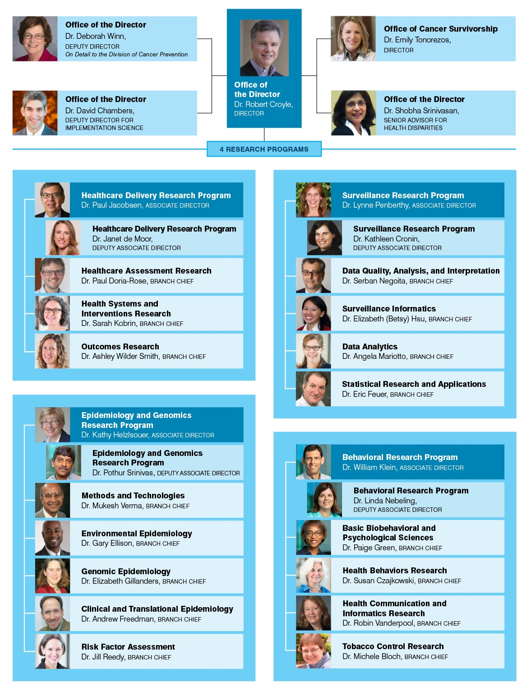

Skip Navigation
Search:
Home
Program Areas
Behavioral Research
Epidemiology + Genomics
Healthcare Delivery Research
Implementation Science
Surveillance
Survivorship
Research Portfolio
Active Grants
Maps of Awarded Grants
Research Initiatives
Funding History + Trends
Funding Opportunities
Apply for Cancer Control Grants
Training and Career Development
Application Submission & Review
Grant Policies
Resources & Opportunities for New Grantees
Archive of Funding Opportunities
Publications + Data
DCCPS Publications
Tracking the Cancer Burden
Reports About DCCPS
DCCPS Public Data Sets & Analyses
Cross-cutting Areas
Energy Balance
Health Disparities
Patient-centered Communication & Care Coordination
Patterns of Care
Precision Medicine and Population Health
About DCCPS
About Cancer Control
About the Division
About Cancer Control
About the Division
Home
About DCCPS
>
DCCPS Organization
>
DCCPS Organization
